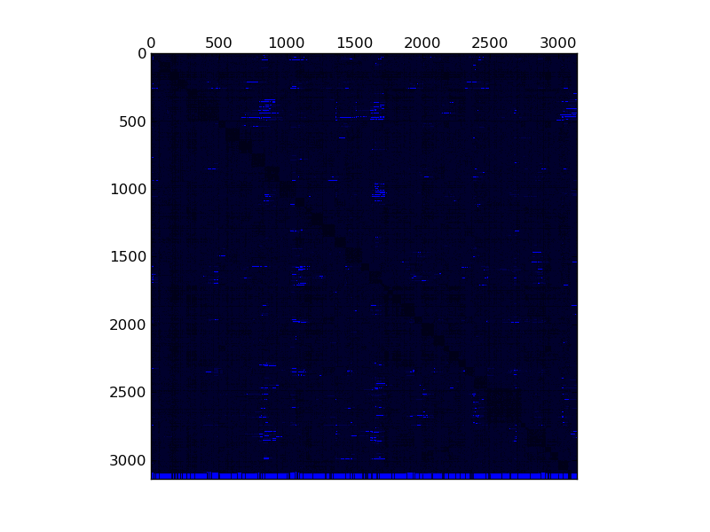

Matrix: psmigr_2
Name, Order, Nonzeros, Unique Values, Sparsity, MC(2), MC(5), MC(8), MC(10) psmigr_2 3142 540022 531668 5.47015 0.00003 0.00019 0.00126 0.00411 0.03064

Program arguments: ../build/test_spmv_sim ../test-benchmark/psmigr_2.mtx File: ../test-benchmark/psmigr_2.mtx Sorting took: took 1.40616 seconds. Nonzeros: 540022 Running on DFE Result Simple Total cycles=27113,26642, Result Simple Padding cycles=14,14, Result Simple Reduction cycles=6280,6280, Running on architecture with maxRows = 200000 Result Simple Iterations=1, Result Simple Took (ms)=1.42415, Result Simple Est (ms)=0.00027113, Result Simple Gflops (est)=3.98349, Result Simple Gflops (actual)=0.000758378, Test passed! All tests passed!